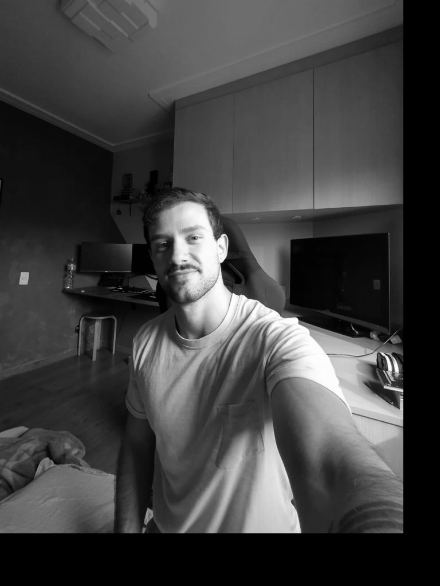
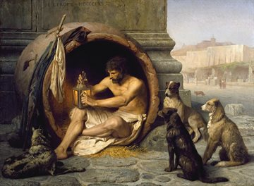

About

I've always been torn about the fact that I question most things. But trying to base my beliefs on solid evidence, reasoning, and rationality is not always a comfortable path. Following this essence, my legal background gave me crucial skills that made up who I am as a professional and human. However, I knew I could make a greater impact, even though I've always felt like the boldest of dreamers and the bitterest of pessimists. I decided to pivot my way to a field where I could more freely examine and analyze the human experience. Valuing creative ingenuity, straightforward rationality, and self-improvement, I believe that I can use my craft, and thus my communication, to make the human condition's burden a little lighter.
INTJ-A
My background has shaped my design philosophy to prioritize minimizing cognitive load. The world is already chaotic enough. To find order in chaos is to empower the user to achieve its objective without hurdles or distractions.
In order to achieve this goal, it is important not to jeopardize the subtle details, the pixel-perfect minutia. There is no better experience than to be able to savor and find joy in the little things. A human that is able to do that truly is virtuous. And so is any design that makes that possible.
"Good design is invisible." - Don Norman
I'm always reading about psychology, philosophy, history, and communication or researching technology and design. I play all kinds of sports and games. Consequently, I also love to compete. Even more with myself.
